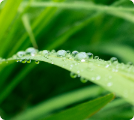
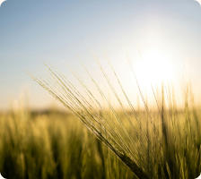
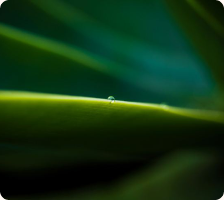
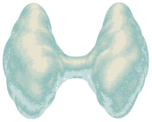

TPO
Validation en cours
Inhibition de la thyroperoxydase. Un mécanisme clé de la perturbation thyroïdienne.
Phase inter-laboratoires
PEPPER / DIRECTION 01
Du vivant au laboratoire. Une direction chaleureuse et tactile, ancrée dans les gestes de recherche.
Sélectionnez une couleur pour copier son code hexadécimal.
Arsenal
Bold · 700
Comprendre. Éprouver. Valider.
Titres, messages clés et chiffres.
Outfit
Regular · 400
Une écriture claire et ouverte pour expliquer les méthodes et relier les acteurs.
Textes de lecture, navigation et commandes.






Les boutons et la carte ci-dessous utilisent les mêmes composants que la page d’accueil.
Validation en cours
Inhibition de la thyroperoxydase. Un mécanisme clé de la perturbation thyroïdienne.
Phase inter-laboratoires
L’olive sert d’accent et de fond. Sur les surfaces claires, les textes de lecture utilisent une encre plus foncée pour préserver le contraste.